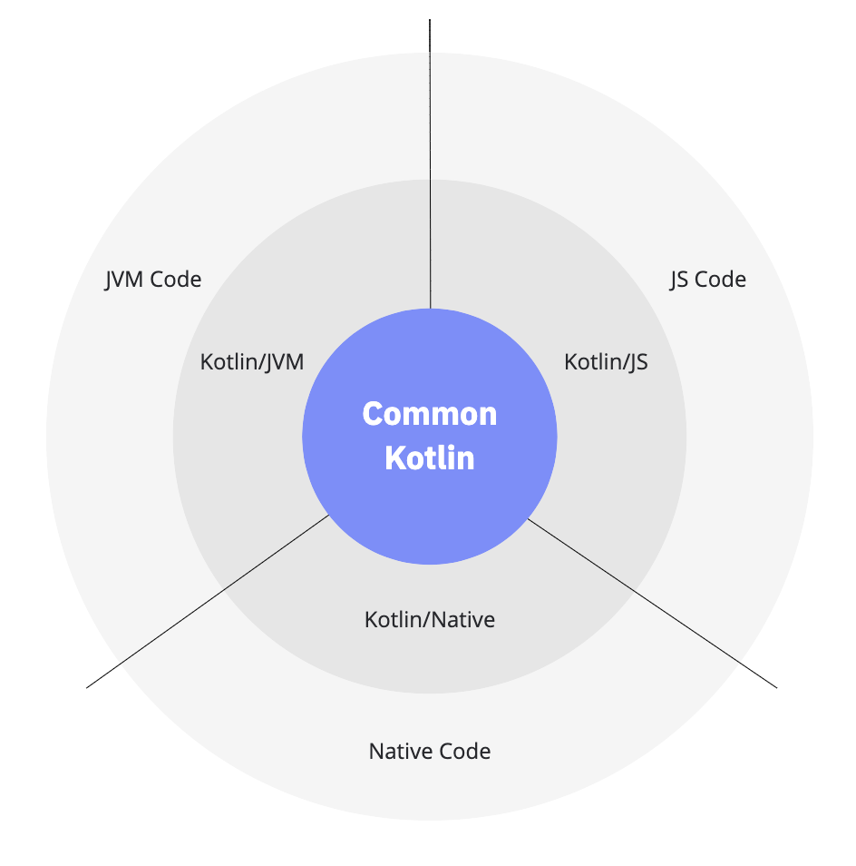
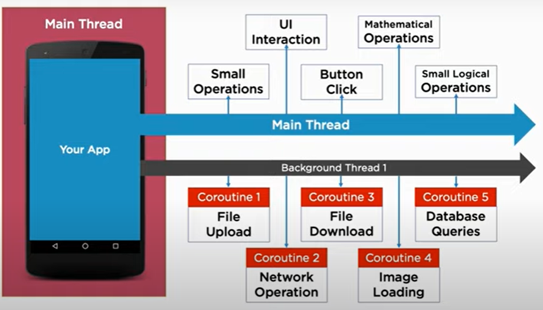

KotlinNotes¶
Kotlin nasce nel 2011, per introdurre un nuovo linguaggio per la JVM, ispirato a Scala, con l’oiettivo di una compilazione più efficiente. Nel 2020 Kotlin è diventato il linguaggio più usato per lo svluppo di applicazioni Android.
Il supporto per la programmazione multipiattaforma è uno dei principali vantaggi di Kotlin (si veda Kotlin Multiplatform ). Riduce il tempo impiegato per scrivere e mantenere lo stesso codice per piattaforme diverse, pur mantenendo la flessibilità ei vantaggi della programmazione nativa.
{kind=link}
In rete si trova molto materiale relativo a questo linguaggio, che ne permette uno studio efficace. Riportiamo qui, per comodità, alcuni riferimenti:
Kotlin wikipedia: fornisce notizie storiche e dettagli sul linguaggio
Kotlin org: il sito ufficiale
Kotlin Documentation: presenta il file pdf della documentazione
Get started with Kotlin: il sito con tutto quello che c’è da sapere su Kotlin
Kotlin Basic syntax: panoramica sui costrutti sintattici di Kotlin (parte di Get started with Kotlin)
Kotlin Learning materials: panoramica sulle risorse utili per lo studio di Koltin (parte di Get started with Kotlin)
Kotlin Online: permette di eseguire programmi Kotlin
Koltin per ISS-72939¶
E’ ovvio che la presentazione e lo studio di Kotlin avrebbe bisogno di un congruo numero di ore. In relazione al corso di Ingegneria dei Sitemi software, ci poniamo due obiettivi principali:
comprendere il ruolo degli Attori Kotlin all’interno della classe ActorBasic.kt
fornire informazioni-base utili per scrivere CodedQActors in Kotlin e frasi Kotlin all’interno dei modelli eseguibili QAk.
Riportiamo qui i punti salienti per ottenere questi obiettivi:
elementi essenziali della sintassi Kotlin
classi ed oggetti in Kotlin
il supporto Kotlin allo stile funzionale (chiusure, callbacks e CPS)
il supporto Kotlin alla programmazione asincrona in stile CPS
le coroutines Kotlin come ‘thread leggeri’ che possono essere sospesi senza bloccare il thread che le esegue
i Kotlin channels come ‘code’ che consentono suspending send e suspending receive
i Kotlin Actors come supporto al modello degli Attori
Il file kotlinUnibo contiene una introduzione con esempi su questi aspetti, tenendo conto di un percorso logico che distingue (al solito) una parte relativa alla organizzazione strutturale dei programmi, una parte relativa alla esecuzione (concorrente) di attività e una parte relativa alla interazione tra attività.
La parte strutturale¶
Kotlin intende promuovere l’idea della Programmazione funzionale e per cui le funzioni sono gli elementi di base di qualsiasi computazione.
Un dato è concettualmente un valore prodotto da una funzione, il cui tipo viene inferito (si veda Data, Types and Variables)
Le funzioni sono oggetti di prima classe che hanno un tipo, possono essere assegnati a variabili e usati come argomenti di funzioni o come valori di ritorno. (si veda Functions)
Kotlin supporta Object Oriented Programming (OOP) e fornisce funzionalità come astrazione, incapsulamento, ereditarietà ma in modo diverso da Java (si veda Classes and Objects in Kotlin). di particolare rilevanza:
La parte concorrente¶
Il runtime Kotlin/Native non incoraggia un classico modello di concorrenza orientato ai thread con blocchi di codice che si escludono a vicenda e variabili condizionali, poiché questo modello è noto per essere soggetto a errori e inaffidabile.
Invece dei thread, il runtime Kotlin/Native offre il concetto di Worker: flussi di flusso di controllo eseguiti contemporaneamente con una coda di richiesta associata. I Worker sono molto simili agli attori nell’Actor Model.
un Kotlin Worker può scambiare oggetti Kotlin con un altro Worker. L’oggetto o è immutabile o, se modificabile, è proprietà di un singolo Worker, in modo da garantire un singolo mutator ed evitare locking. La proprietà può essere trasferita. Si veda anche Kotlin Concurrency overview.
Le Chiusure lessicali sono spesso usati come callbacks in programmi con asincronismo I/O bound, in accordo allo stile di programmazione CPS (Continuation-passing style) .
Per dare supporto alla programmazione asincrona (o non bloccante), evitando il noto callback hell (si veda Asynchronous I/O), Kotlin introduce il meccanismo delle coroutines.
Una coroutine (si veda) Introduction to coroutines) è una istanza di calcolo sospendibile non vincolata a a nessun thread particolare. Può sospendere la sua esecuzione in un thread e riprendere in un altro.
Il concetto si basa sull’idea di sospendere un calcolo senza bloccare un thread (si veda suspend function in Coroutines basics) implementato utilizzando (dietro le quinte) una macchina a stati e
CPS. Le coroutines non sono parte del linguaggio e nemmeno della libreria standard; fanno parte di una libreria separata
{kind=link}
La parte interazione¶
I Deferred values forniscono un modo conveniente per trasferire un singolo valore tra coroutine. I Canali Kotlin forniscono un modo per trasferire un flusso di valori (uno stream).
Un attore Kotlin è una combinazione di una coroutine, lo stato in essa incapsulato e confinato e un canale per comunicare con altre coroutine. Gli Attori Kotlin promuovono uno stile di programmazione basato su messaggi che supera la tradizionale interazione di chiamata di procedura senza perdere in prestazioni.